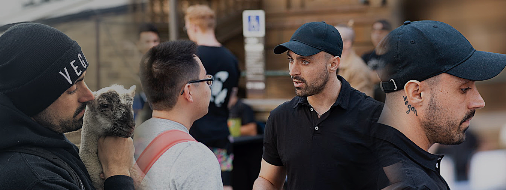

(Left) Joey holding a goat. (Middle-Right) Joey performing his activism in public. (right) Joey's neck tattoo.
What we know about his past:
Born November 26, 1988 in Adelaide Australia.
At the age of 14, he had left school and developed a heavy drug addiction. Living in and around an enviroment with easy access to alcohol and local gangs.
He spent 12 years on some type of substance, and that was getting him mixed up in gang relations. Due to this his criminal record grew, eventually including three assaults.
He spent 18 months under house arrest, and in September 2011 an arrest was made for Joey resulting of police discovering a concealed, loaded shotgun that he was intending on bringing to a drug deal. Multiple weapons and additional ammunition in his hotel room were also discovered and he spent six months in jail.
Once out of jail Joey had some eye opening revelations, and made some serious life changing choices. Thus turning his life around. He removed Alcohol, Drugs and animal exploitation from his life and went on the path of his social activism for the veganism movement.
In May and Nov of 2021, he released videos to celebrate and talk about his story.
What he has accomplished publically for the animal rights movement:
Joey has been involved in Animal Rights protests and activism in many places around the world including Australia, Hong Kong, and The United Kingdom.
Has worked with Anonomyous for the Voiceless, the Save Movement, and the 22 Day Vegan Challenge facebook group to spread information and practices to help people shift their lives over to a better overall lifestyle.
Has been to countless slaughterhouses and had many of them bugged with cameras to get the inside happenings caught on camera to share with the world.
In 2018 Joey embarked on the Vegan Prophecy UK tour, which involved visiting and protesting many slaughterhouses from within the UK.
Joey has appeared on British Television such as, This Morning, Jeremy Vine Show, and many others such as the local and large news outlets inside the UK such as Good Morning Britain and others.
He hosts a very honest and no bullshit YouTube channel talking about these topics, and talking with the online community.
On his channel he posts videos of him out in public discussing many propositions that are shocking to the eye at first glance, usually having a sitdown discussion about the ethics of our current prolific animal exploiting society.
He has, himself though his activism, changed the minds of hundreds of thousands of people. And continues to do so through the thick and thin. Through the utter disgusting hate that this type of activist gets.
He is Fighting to save the lives of trillions of animals exploited needlessly every year.